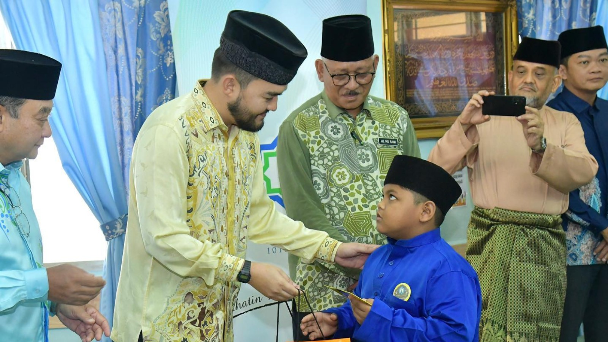
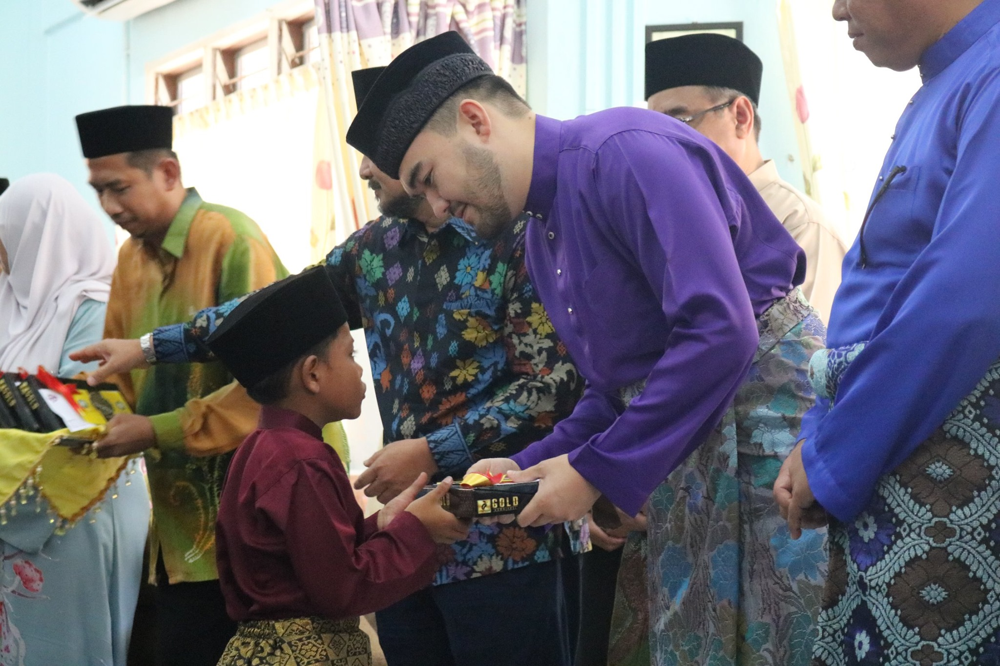
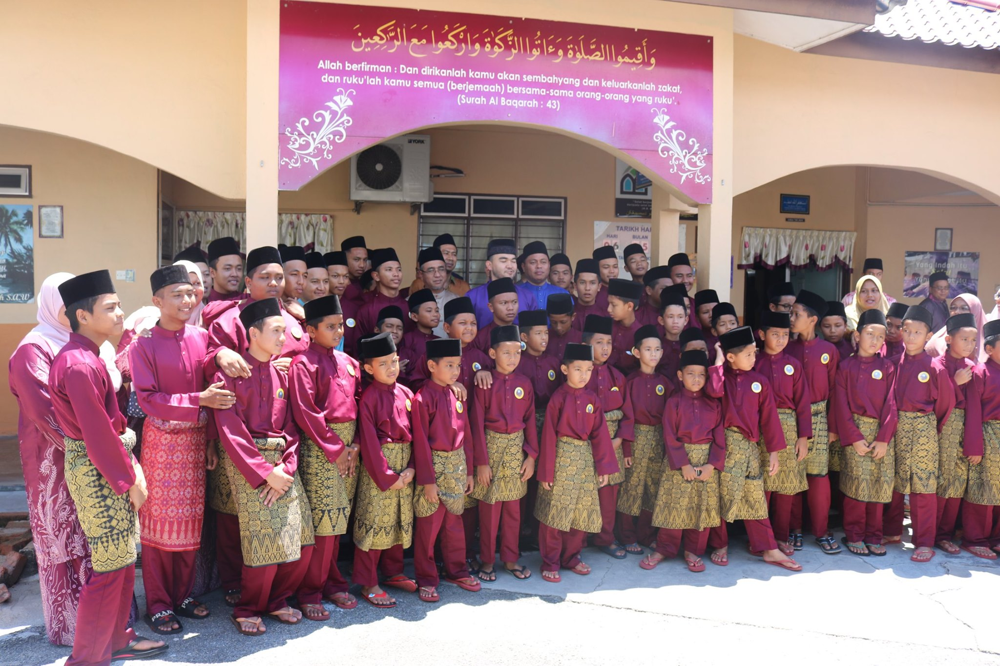

Donation Information
TENGKU AMIR DONATION

PETALING JAYA: The Young Raja of Selangor, Tengku Amir Shah Sultan Sharafuddin Idris Shah agreed to visit the orphans at the Sultan Salahuddin Abdul Aziz Shah Al Haj Orphanage (RAYSAS) in Kundor Beach, Melaka.
His Majesty handed over donations worth RM7,800 which were distributed to 26 recipients.
His Majesty also donated sticky cloth and 100 kilograms of rice for the school
YIDE Donates to the Sultan Salahuddin Abdul Aziz Shah Al-Haj Orphanage (RAYSAS)

TANJUNG KLING, 6 May 2019 - A total of RM 16,200.00 has been allocated by Yayasan Islam Darul Ehsan (YIDE) to the Sultan Salahuddin Aziz Shah Al-Haj Orphanage for this year's Aidilfitri donation which was presented by His Royal Highness Tengku Amir Shah, King Young Selangor.

Yayasan Islam Darul Ehsan (YIDE) commits every year to deliver donations to RAYSAS and this year has entered the 5th year which was previously under the responsibility of Baitulmal MAIS.
Find us at Facebook to get to know more about us

| {kind=link}
{kind=link}
{kind=link}